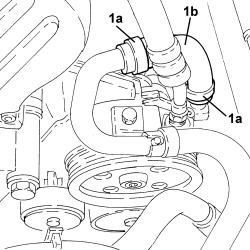

4130B38 POWER STEERING PUMP INLET PIPE FROM FLUID RESEVIOR PIPE OR INTERMEDIATE RIGID PIPE R R
- Path
- Procedures > 41 STEERING UNIT > 4130 POWER STEERING > 4130B POWER STEERING HYDRAULIC SYTEM > 4130B38 POWER STEERING PUMP INLET PIPE FROM FLUID RESEVIOR PIPE OR INTERMEDIATE RIGID PIPE R R
- Kind
- repair procedure (removal / refitting; the operation number is the code)
- Applies to
- engines: 1.9 JTD 8V, 1.9 JTD 16V, 2.4 JTD 20V; all production periods
- Interactive page
- https://sloeber94.github.io/elrnDB/#/939010832
Applies to: engines: 1.9 JTD 8V, 1.9 JTD 16V, 2.4 JTD 20V; all production periods
 Removing
Removing
 Refitting
Refitting- Position the vehicle on a lift.
Op. 7055B54 UNDER ENGINE PROTECTION/GUARD - R.R.
Op. 1048A50 TURBOCHARGER AIR INTAKE PIPE - R.R.
- Draw off the power assisted steering fluid from the reservoir using a suitable syringe.
1. Loosen collars (1a) and remove the power steering pump inlet pipe from the rigid intermediate pipe (1b).

Applies to: engines: 1.9 JTD 8V, 1.9 JTD 16V, 2.4 JTD 20V; all production periods
Refitting
Removing- Refit the power steering pump inlet pipe from the rigid intermediate pipe and secure with collars.
Op. 1048A50 TURBOCHARGER AIR INTAKE PIPE - R.R.
Op. 0010T71 POWER STEERING FLUID CHECK LEVEL AND TOP UP IF NECESSARY
Op. 0010T75 HYDRAULIC POWER STEERING SYSTEM BLEED AIR
Op. 7055B54 UNDER ENGINE PROTECTION/GUARD - R.R.
- Remove the vehicle from the lift.